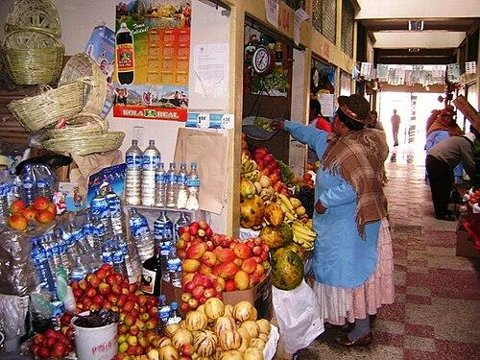

Tema: ¿Listo para emprender?
Repasa los regímenes tributarios antes de dar el examen.
Nuevo RUS

El régimen más sencillo, para negocios muy pequeños que venden al consumidor final, como una bodega o un puesto del mercado.
¿Sabías que…? Si un cliente le pide factura, el negocio debe cambiarse a un régimen que permita emitirlas.
- ¿Quiénes?Solo personas naturales y sucesiones indivisas. No pueden entrar empresas como una S.A.C.
- Límite de ingresosHasta S/ 96 000 al año o S/ 8 000 en un mes.
- Pago mensualCuota fija: S/ 20 (categoría 1, hasta S/ 5 000 al mes) o S/ 50 (categoría 2, hasta S/ 8 000 al mes). Ya incluye el IGV y la renta.
- ComprobantesSolo boletas de venta y tickets. No puede emitir facturas.
- Libros contablesNo lleva libros; solo guarda sus comprobantes.
- Declaración anualNo presenta.
RER
Régimen Especial de Renta: para emprendedores, microempresas y pequeños negocios que generan rentas de tercera categoría.
¿Sabías que…? En el RER no se presenta declaración anual de renta: el pago de cada mes es el definitivo.
- ¿Quiénes lo conforman?Personas naturales y jurídicas, con ingresos de hasta 300 UIT al año.
- Límite de ingresosS/ 300 000 al año.
- Límite de comprasS/ 300 000 al año.
- Activos fijosHasta S/ 70 000 (sin contar el inmueble).
- Contabilidad y librosRegistro simplificado: Registro de Compras y Registro de Ventas.
- TributaciónPago de un porcentaje fijo del Impuesto a la Renta, según el tipo de actividad.
- Comprobantes de pagoBoletas de venta, notas de crédito y notas de débito.
- Beneficio principalMenor carga administrativa y tributaria.
Régimen MYPE
Régimen MYPE Tributario: para micro y pequeñas empresas que van creciendo y quieren pagar según lo que ganan.
¿Sabías que…? Las empresas pequeñas pagan menos porque la primera parte de su ganancia tiene la tasa baja de 10 %.
- ¿Quiénes?Personas naturales y jurídicas (micro y pequeñas empresas).
- Límite de ingresosHasta 1 700 UIT de ingresos netos al año.
- Pago mensual a cuenta1 % de los ingresos netos del mes, si al año no pasan de 300 UIT.
- Impuesto anual10 % por las primeras 15 UIT de ganancia (renta neta) y 29,5 % por el resto.
- ComprobantesPuede emitir facturas, boletas y otros comprobantes.
- Declaración anualSí presenta.
Régimen General
El régimen para empresas de cualquier tamaño, desde un negocio mediano hasta una gran empresa.
¿Sabías que…? No hay que confundir: 29,5 % es el Impuesto a la Renta y 18 % es el IGV.
- ¿Quiénes?Cualquier persona natural o jurídica con negocio.
- Límite de ingresosNo tiene límite.
- Impuesto anual29,5 % de la renta neta (ingresos menos gastos aceptados).
- Pagos a cuentaPaga cada mes a cuenta del impuesto del año.
- Libros contablesLleva contabilidad completa según sus ingresos.
- ComprobantesPuede emitir facturas, boletas y otros comprobantes.
- Declaración anualSí presenta.
| Característica | Nuevo RUS | RER | Régimen MYPE | Régimen General |
|---|---|---|---|---|
| ¿Empresas (S.A.C.)? | No | Sí | Sí | Sí |
| Límite de ingresos al año | S/ 96 000 | S/ 300 000 | 1 700 UIT | Sin límite |
| ¿Cómo paga? | Cuota fija S/ 20 o S/ 50 | Porcentaje fijo mensual | 1 % al mes y 10 % / 29,5 % al año | Pagos a cuenta y 29,5 % al año |
| Libros | Ninguno | Compras y Ventas | Según ingresos | Contabilidad completa |
| Declaración anual | No | No | Sí | Sí |
Fuente: SUNAT e infografía de la clase. Créditos de las fotos.
Superintendencia Nacional de Aduanas y de Administración Tributaria. Recauda y fiscaliza los tributos.
Registro Único de Contribuyentes: número de 11 dígitos que identifica al negocio.
Unidad Impositiva Tributaria: un valor en soles que fija el Gobierno cada año y sirve de medida para límites y multas.
Impuesto General a las Ventas: 18 % (16 % de IGV más 2 % de Impuesto de Promoción Municipal).
Comprobante para el consumidor final.
Comprobante para empresas; lleva el RUC del cliente y el IGV aparte.
La ganancia: ingresos menos gastos aceptados.
Las rentas que vienen de un negocio o empresa.